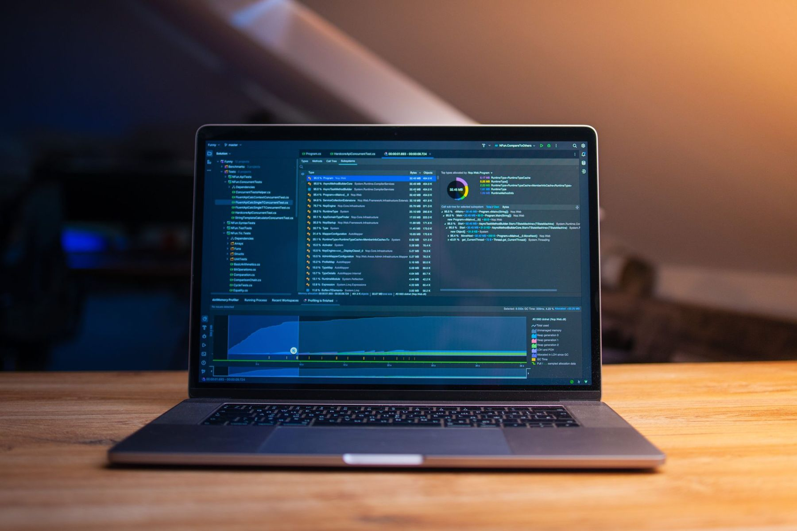

My story · keep scrolling
From a wave on a scope to a bar on a dashboard.
B.Tech Honours, CGPA 8.72
Electronics and Communication at TKM College of Engineering, with a minor in Computer Science. Before that, 93.6% in Class 12 and a state-level Maths Olympiad gold. I learned to cut noise and find what is real.
IEEE: committee member, then Chair
I joined the organising team of IEEE YESIST12 WePower Track, an international innovation competition. Later I was chosen by interview as SPS Chair, led 50+ members, and served on the core team of SIGNAL 4.0 (300+ attendees, 20% up on the year before).
A paper on brain-like circuits
I designed voltage-mode neuron circuits that fire like a brain cell and simulated them in LTspice. My guide presented the paper at CSITSS 2026, an international conference at RV College of Engineering, Bengaluru, because I was away on my internship. I also worked as a student researcher in the University at Buffalo and TKM collaboration.
Added Python and machine learning
In my ML internship I compared 7 models on crop data. The best one reached 96.87% accuracy. That is where I learned to test a model before trusting it.
Taught myself the analyst toolkit
SQL, Power BI, DAX, Excel, Streamlit. Three projects and a growing set of certificates (Deloitte, SAP, NPTEL, Forage), built on evenings and weekends.
First role: SAP Intern on CIDCO's migration
I turn what the business team says into clear documents, and automate the slow parts. Same habit as before: find the pattern, explain it plainly.
FROM offers JOIN redemptions USING (offer_id)
GROUP BY offer ORDER BY redeemed DESC;
>> 3 projects · SQL · Power BI · Python
>> Deloitte, Forage, NPTEL certificates · done
>> 4 SAP finance courses · done